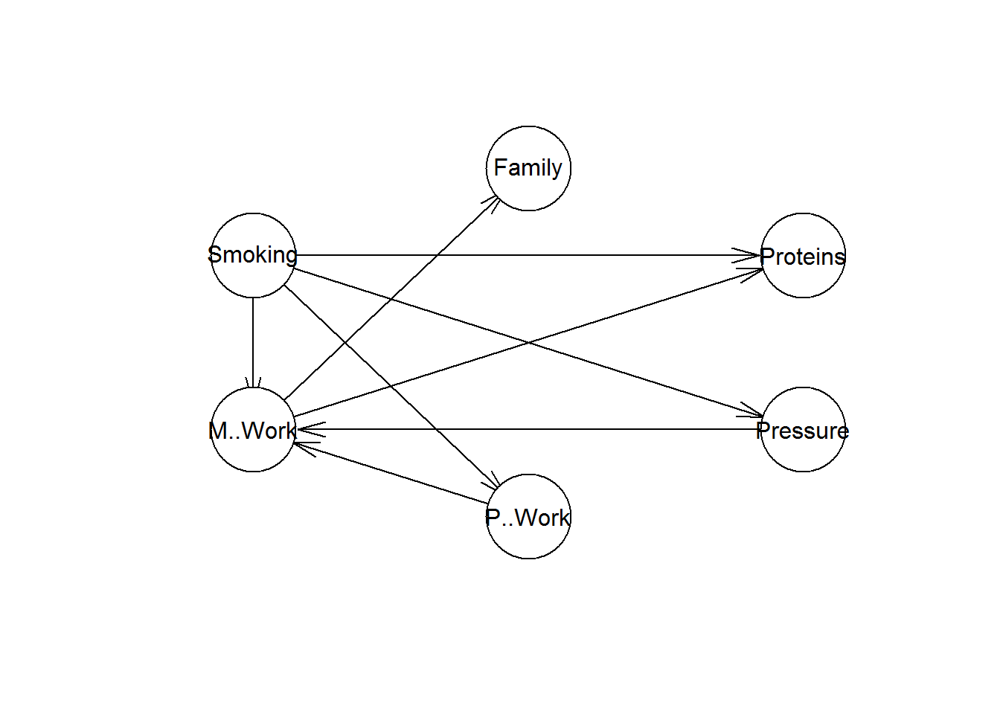
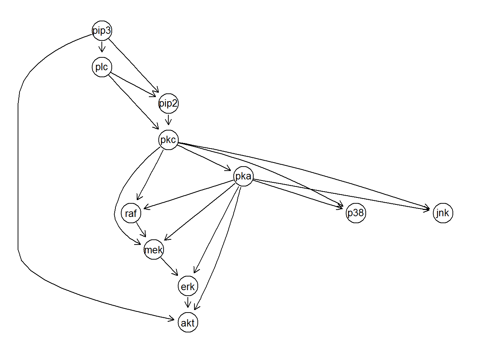
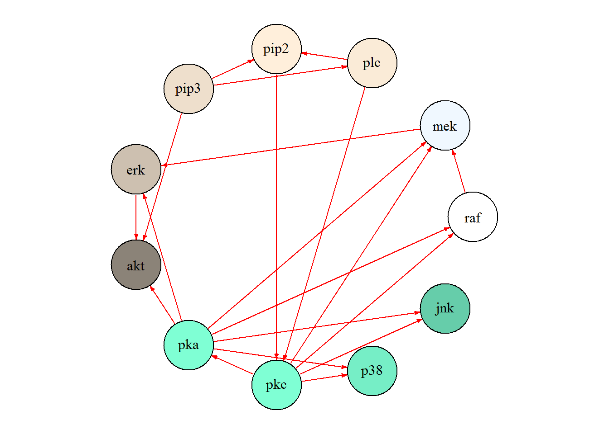

#install.packages("bnlearn")
library(bnlearn)##
## Attaching package: 'bnlearn'## The following object is masked from 'package:stats':
##
## sigmaThis package contains a number of algorithms for Bayesian Network (BN) structure learning, parameter learning and inference. it also contains existing datasets that we can use to build and train a BN and ultimately make an inference
data(coronary)
head(coronary)## Smoking M. Work P. Work Pressure Proteins Family
## 1 no no no <140 <3 neg
## 2 no no no <140 <3 neg
## 3 no no no <140 <3 neg
## 4 no no no <140 <3 neg
## 5 no no no <140 <3 neg
## 6 no no no <140 <3 negwithin the bnlearn package we can use one of the algorithms, “max-min hill climbing”, to create a dependency between all of the variables in our dataframe, and use the plot function to create a simple visualization of the relationships.
bn_df <- data.frame(coronary)
res <- hc(bn_df)
plot(res)
The causality may not be correct based on the algorithm alone, so in this example we will edit some of the structure manually. Family is not a condition of stenuous mental work so we remove that link
res$arcs <- res$arcs[-which((res$arcs[,'from'] == "M..Work" & res$arcs[,'to'] == "Family")),]now that we have established the structure we can move to training. The bn.fit function runs the expectation maximization algorithm on our data to find out the contitional probalility at each node.
fittedbn <- bn.fit(res, data = bn_df)
print(fittedbn$Proteins)##
## Parameters of node Proteins (multinomial distribution)
##
## Conditional probability table:
##
## , , M..Work = no
##
## Smoking
## Proteins no yes
## <3 0.6685824 0.6167763
## >3 0.3314176 0.3832237
##
## , , M..Work = yes
##
## Smoking
## Proteins no yes
## <3 0.5671982 0.3235294
## >3 0.4328018 0.6764706Now we can move to the inference from our trained BN. Each query of any event based on selected evidence provides a probability.
cpquery(fittedbn, event = (Proteins=="<3"), evidence = ( Smoking=="no") )## [1] 0.6219136cpquery(fittedbn, event = (Proteins=="<3"), evidence = ( Smoking=="no" & Pressure==">140" ) )## [1] 0.6327684cpquery(fittedbn, event = (Pressure==">140"), evidence = ( Proteins=="<3" ) )## [1] 0.4287676More advanced visualizations can also be done in bnlearn but we are going to follow a couple of examples of some more complex data in the sparsebn package to keep it interesting
#install.packages("sparsebn")
library(sparsebn)## Loading required package: sparsebnUtils##
## Attaching package: 'sparsebnUtils'## The following object is masked from 'package:bnlearn':
##
## random.graph## Loading required package: ccdrAlgorithm## Loading required package: discretecdAlgorithm##
## sparsebn v0.0.5, Copyright (c) 2016-2017
## Bryon Aragam, University of California, Los Angeles
## Jiaying Gu, University of California, Los Angeles
## Dacheng Zhang, University of California, Los Angeles
## Qing Zhou, University of California, Los Angeles
## Fei Fu
##
## Please cite our work! Type citation("sparsebn") for details.
## ---> Bugs? Please report any bugs at https://github.com/itsrainingdata/sparsebn/issues.# source("http://bioconductor.org/biocLite.R")
# biocLite("Rgraphviz")
library("Rgraphviz")## Loading required package: graph## Warning: package 'graph' was built under R version 3.5.1## Loading required package: BiocGenerics## Loading required package: parallel##
## Attaching package: 'BiocGenerics'## The following objects are masked from 'package:parallel':
##
## clusterApply, clusterApplyLB, clusterCall, clusterEvalQ,
## clusterExport, clusterMap, parApply, parCapply, parLapply,
## parLapplyLB, parRapply, parSapply, parSapplyLB## The following objects are masked from 'package:bnlearn':
##
## path, score## The following objects are masked from 'package:stats':
##
## IQR, mad, sd, var, xtabs## The following objects are masked from 'package:base':
##
## anyDuplicated, append, as.data.frame, basename, cbind,
## colMeans, colnames, colSums, dirname, do.call, duplicated,
## eval, evalq, Filter, Find, get, grep, grepl, intersect,
## is.unsorted, lapply, lengths, Map, mapply, match, mget, order,
## paste, pmax, pmax.int, pmin, pmin.int, Position, rank, rbind,
## Reduce, rowMeans, rownames, rowSums, sapply, setdiff, sort,
## table, tapply, union, unique, unsplit, which, which.max,
## which.min##
## Attaching package: 'graph'## The following objects are masked from 'package:bnlearn':
##
## degree, nodes, nodes<-## Loading required package: gridThe Rgraphviz package is a more flexible visualitaion tool that the simple versions like graphviz.plot()
setPlotPackage("graph")
plot(cytometryContinuous$dag)
You have complete control over your visualization in the igraph package. Here we plot a cleaner version of the same data as the previous visual of the continuous data.
setPlotPackage("igraph")
plot(cytometryContinuous$dag,
layout = igraph::layout_(to_igraph(cytometryContinuous$dag),
igraph::in_circle()),
vertex.label = names(cytometryContinuous$dag),
vertex.size = 30,
vertex.label.color = gray(0),
vertex.color = colors(),
edge.color = "red",
edge.arrow.size = 0.3)
Scutari, Marco. 2013. “Learning Bayesian Networks in R:an Example in Systems Biology”.
Tsamardinos, Ioannis, Laura E. Brown, and Constantin F. Aliferis. “The max-min hill-climbing Bayesian network structure learning algorithm.” Machine learning 65.1 (2006): 31-78.
Aragam, Bryon, Jiaying Gu, and Qing Zhou. 2018. “Learning Large-Scale Bayesian Networks with the sparsebn Package”.